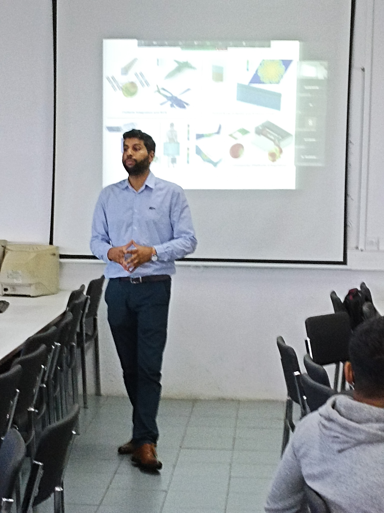

Teaching across electronics, communication systems, RF engineering and interdisciplinary technology subjects.
Teaching is an integral part of my academic work, connecting engineering fundamentals with emerging technologies and practical applications.

The supplied CV records supervision of four PhD candidates at CHRIST University.
Mentoring graduate students and early-career researchers in antenna design methodology and electromagnetic simulation practice.